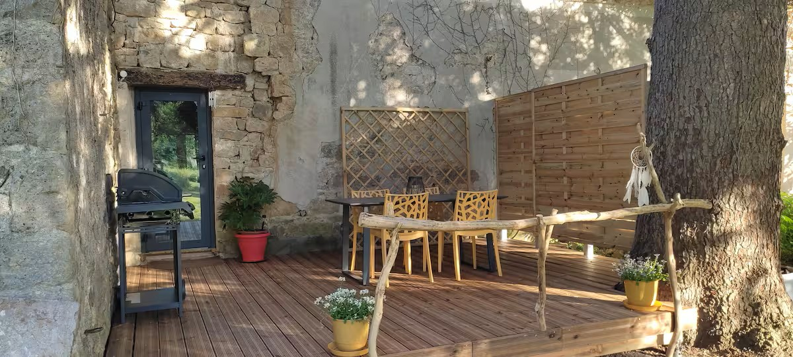
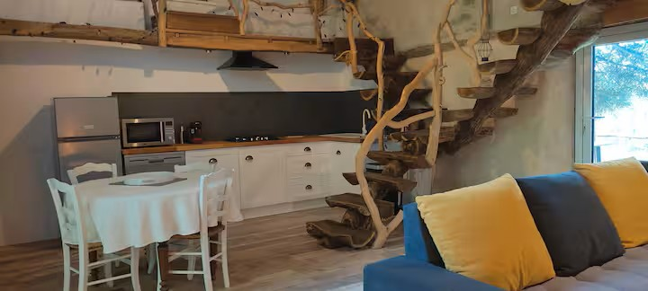
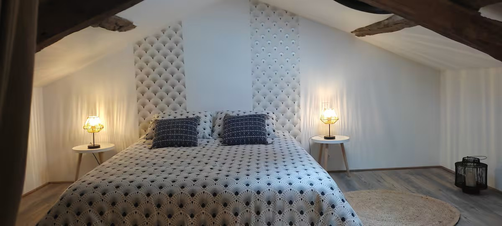

Accueil
Bienvenue au Gîte Ô Nature
Gîte Ô Nature - Séjour au cœur de la nature
Varen (82330) - Tarn-et-Garonne
A proximité de Saint Antonin Noble Val - 10 minutes
Bienvenue au Gîte Ô Nature



Profitez d’un séjour relaxant en pleine nature dans un gîte confortable, atypique et chaleureux,
idéal pour les couples, familles ou amis.
Pour un confort maximal, vous pourrez profiter de la climatisation en été et d'un poêle à bois l'hiver.
Votre Hôte vous accueille à partir de 17H. Le départ reste libre avant 12h.
Le Gîte
Voici nos services.
Gîte Ô Nature - Séjour au cœur de la nature
Varen (82330) - Tarn-et-Garonne
A proximité de Saint Antonin Noble Val - 10 minutes
Le gîte
- Capacité : 2 à 4 personnes
- 2 chambres (lits 160 et 140)
- Draps, housse de couette et serviette de toilette fournie
- Salon confortable avec canapé convertible et poêle à bois
- Cuisine entièrement équipée
- Climatisation
- Réfrigérateur
- Lave vaisselle
- Poêle à bois
- Four à micro-ondes
- Cafetière Tassimo
- Bouilloire électrique
- Grille pain
- TV HD
- Wi-Fi gratuit
- Lit parapluie sur demande
- Produits de nettoyage
- Terrasse et jardin
- Mobilier extérieur
- Barbecue à gaz
- Parking privé
- Animaux acceptés
Intérieur
Extérieur
Animaux
A propos du logement
Le gîte Ô Nature est un hébergement atypique et confortable où vous séjournez dans un environnement avec vue sur le jardin, collines, chevaux et d'une terrasse en bois abritée par un majestueux sapin
C'est une ancienne grange rénovée avec soin alliant l'esprit traditionnel, modernité, confort et originalité.
Il se compose d'une belle pièce à vivre aménagée dans une ambiance cosy avec canapé d'angle, poêle et cuisine équipée et d'un escalier central orné de branches de buis desservant 2 chambres.
Situé à seulement 10 minutes du joli village médiéval de Saint Antonin Noble Val, au coeur de l'Aveyron, le gîte Ô Nature est un hébergement où vous séjournerez dans un environnement avec vue sur jardin, collines, chevaux vivant sur leur terrain boisé de 2 hectares.
Vous accédez au gîte par un chemin privé et avez l'accès à votre parking, non loin vous traversez le jardin pour arriver à une spacieuse terrasse en bois abritée par un majestueux sapin.
L'hébergement est une ancienne grange rénovée avec soin alliant l'esprit traditionnel, modernité, confort et originalité.
Il se compose d'une belle pièce à vivre aménagée dans une ambiance cosy, d'un salon avec un grand canapé d'angle convertible, d'une grande TV à écran plat et d'un poêle. La cuisine ouverte dans l'espace de vie est neuve, équipée d'un lave vaisselle, four micro ondes, réfrigérateur, cafetière senseo ou tassimo et grille pain.
Un joli escalier central dessert 2 paliers où vous disposez de 2 chambres avec lit double (lit de 160 et lit de 140) et d'une salle d'eau avec douche, meuble vasque et toilettes.
Un espace extérieur privatif où vous pourrez profitez des merveilleux couchers de soleil et de grillades.
Nous sommes à la limite du Tarn et de l'Aveyron entourés de sites médiévaux pittoresques dans un écrin de verdure et de panoramas à couper le souffle, c'est un voyage à travers les époques.
De votre hébergement vous séjournerez proche de Saint Antonin Noble Val, citée médiévale blottie au creux de cette noble vallée dominée par le Roc d'Anglars, majestueuse muraille de calcaire, réputée pour son incroyable marché dominical, ses ruelles empreintes de son passé et de son riche patrimoine, de ses restaurants, commerces et ateliers d'artistes.
A seulement 18km vous pourrez vous rendre au village médiéval de Najac avec sa forteresse royale et ses maisons à colombages, au célèbre village de Cordes sur Ciel, grand site d'Occitanie avec sa cité médiévale ainsi qu'à Caylus autre cité médiévale et sa cascade pétrifiante.
Proche du village de Bruniquel et ses 2 châteaux perchés sur un promontoire rocheux et de Penne, village de charme avec ses ruelles sinueuses d'antan où on monte à la conquête du château fort
De nombreuses petites plages au bord du fleuve pour vous baignez ainsi que des lacs et de nombreuses guinguettes pour vous restaurer.
Canoé, randonnée, vtt, escalade, parc aventure...
À découvrir autour de Varen
Découvrez les Gorges de l’Aveyron et ses plages pour une baignade, les villages médiévaux Saint-Antonin-Noble-Val, Cordes-sur-Ciel, Najac, Laguepie, Penne, Bruniquel et de nombreux sites touristiques à proximité.
Activités Canoé, randonnée, vtt (location de vélos à Saint Antonin), escalade, parc avanture, baignade dans l'aveyrons ou dans les nombreux lacs aménagés.
Restauration dans les nombreux restaurants et guinguettes dont le réputé Boui Boui du Pays à 2 minutes du gîte.
Contact et Réservation
Contactez-nous ici.
Gîte Ô Nature - Séjour au cœur de la nature
Varen (82330) - Tarn-et-Garonne
A proximité de Saint Antonin Noble Val - 10 minutes
Contact et réservation
Adresse : 230 Route de Laumière, 82330 Varen
Email : gite.onature@gmail.com
Téléphone : 06 87 10 51 30
Photos
Gîte Ô Nature - Séjour au cœur de la nature
Varen (82330) - Tarn-et-Garonne
A proximité de Saint Antonin Noble Val - 10 minutes